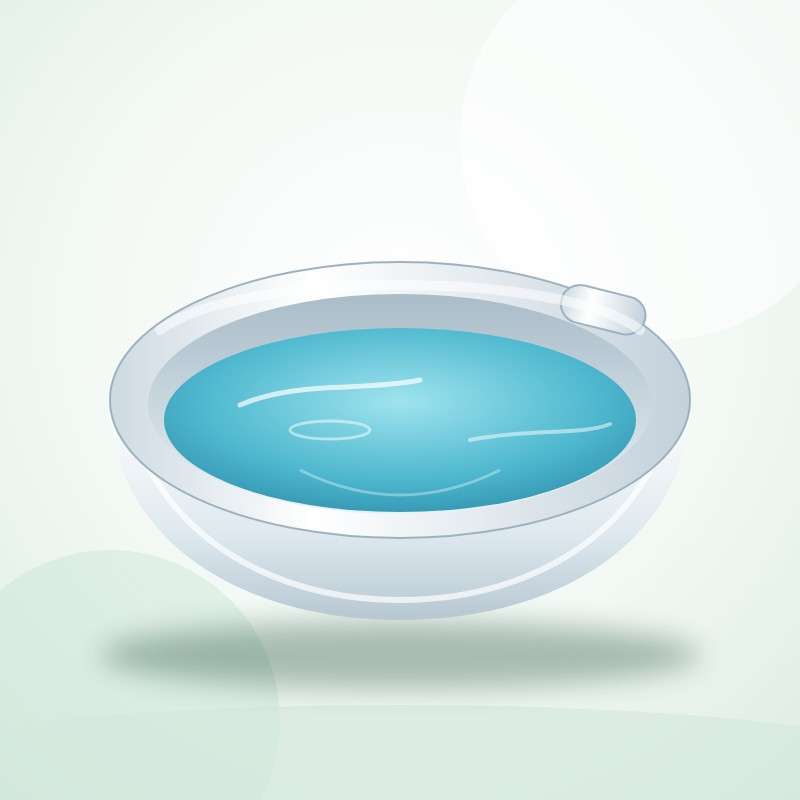
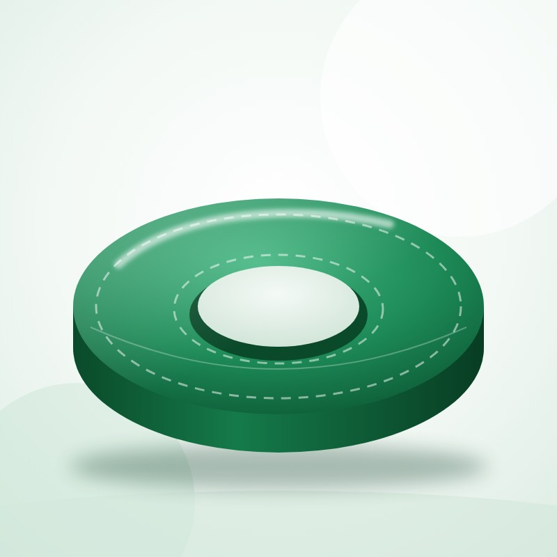
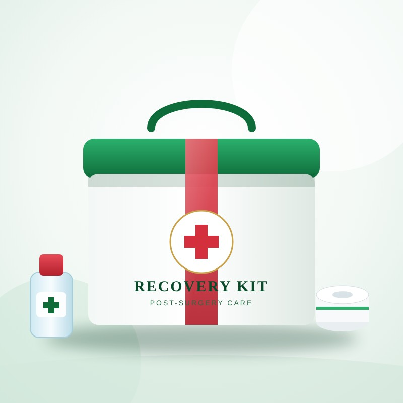
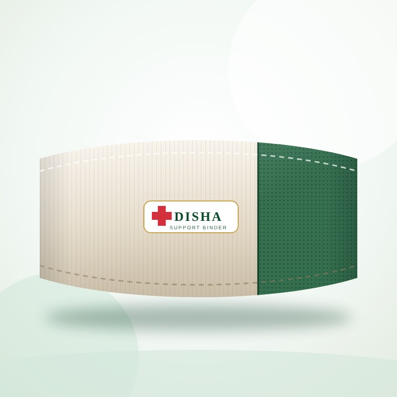
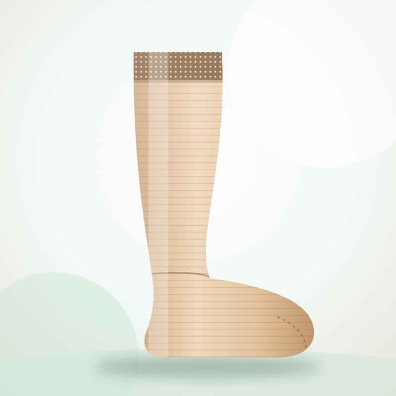
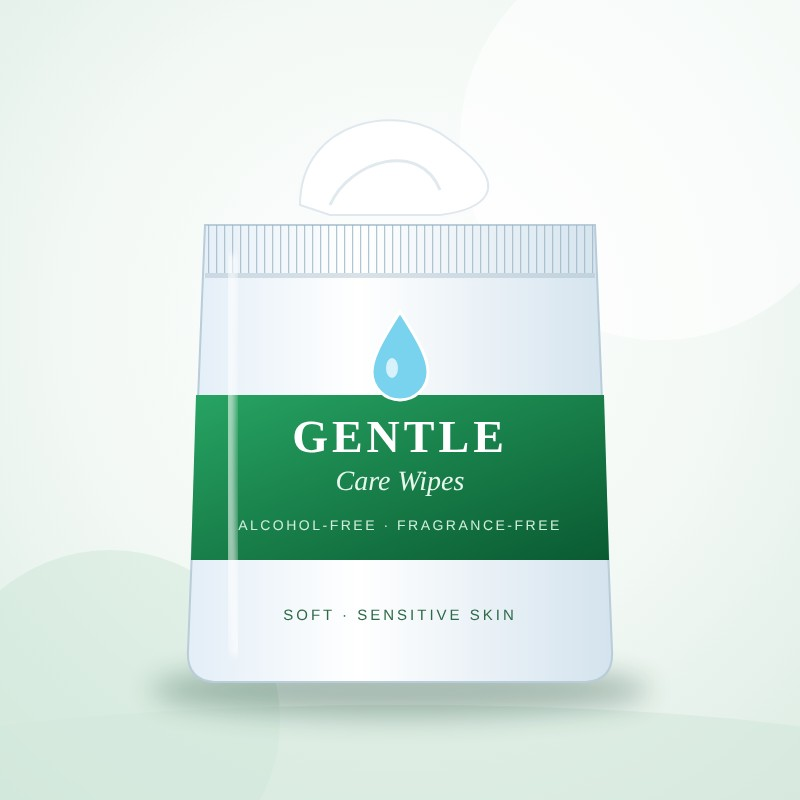
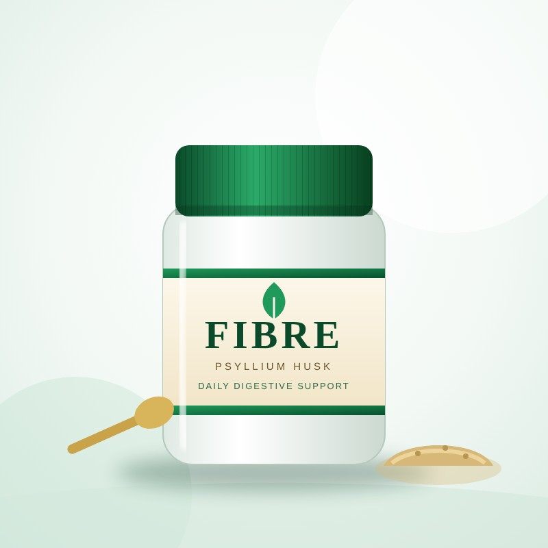
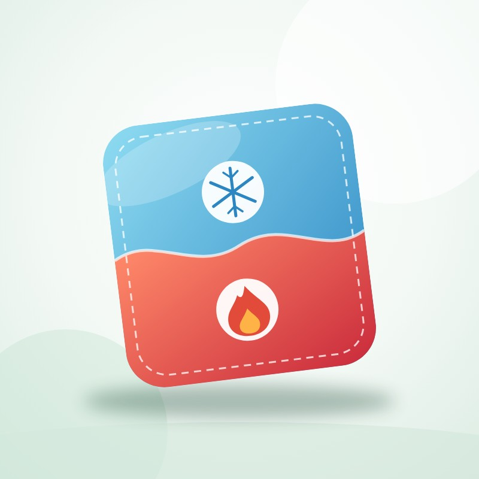

RecommendedSitz Bath Tub
Comfortable over-the-toilet sitz bath tub for soothing warm-water soaks after piles, fissure or fistula treatment.
View Details
RecommendedComfortable over-the-toilet sitz bath tub for soothing warm-water soaks after piles, fissure or fistula treatment.
View Details
RecommendedErgonomic donut-style cushion that reduces pressure while sitting, helping comfort during recovery from anorectal procedures.
View Details
RecommendedComplete home-care kit with wound dressings, antiseptic, gauze, tape and a simple recovery guide prepared by our surgeons.
View Details
RecommendedBreathable, adjustable binder that supports the abdomen after hernia and abdominal surgery, improving comfort during movement.
View Details
RecommendedGraduated compression stockings that help circulation and lower the risk of clots during recovery or long periods of rest.
View Details
RecommendedSoft, alcohol-free, fragrance-free wipes for gentle cleaning of the sensitive area during piles and fissure recovery.
View Details
RecommendedPsyllium-based fibre supplement that helps keep stools soft and regular, reducing straining in piles and fissure.
View Details
RecommendedReusable gel pack for soothing swelling and discomfort, used hot or cold as advised by your surgeon.
View DetailsOur team will recommend the right size and type for your recovery.